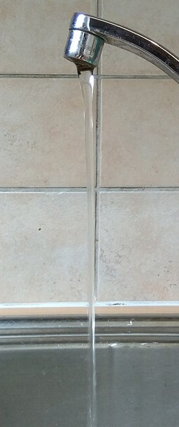

La conservación de la masa en un fluido: del caudal de una manguera a la divergencia nula
Tapá con el dedo parte de la boca de una manguera: el chorro sale más rápido y llega más lejos. Fruncí los labios y podés apagar una vela desde lejos, cosa que no lográs soplando con la boca abierta [1]. Las dos cosas son consecuencia de una de las leyes más simples de la física: la masa no se crea ni se destruye. En mecánica de fluidos, esa ley se llama ecuación de continuidad.
El caudal Q es el volumen de fluido que pasa por un lugar en cada unidad de tiempo [1]. Si el fluido avanza con velocidad media v por un caño de sección A, en cada segundo pasa un cilindro de volumen A·v [1]:
OpenStax insiste en que caudal y velocidad no son lo mismo. Un arroyo de montaña puede correr muy rápido y llevar muchísima menos agua que el Amazonas: el caudal depende de la velocidad, pero también del tamaño del cauce [1].
Si un caño se angosta y no hay pérdidas ni entradas laterales, la masa que entra por un extremo tiene que salir por el otro [1]. El caudal de masa es la densidad por el caudal de volumen, así que [1]:
OpenStax hace la cuenta para una manguera de jardín de 0,9 cm de radio con un pico de 0,25 cm de radio y un caudal de medio litro por segundo: el agua va a 1,96 m/s en la manguera y a 25,5 m/s en el pico [1]. Como el área depende del cuadrado del radio, achicar un poco el radio cambia mucho la velocidad [1]. Y al revés: cuando un río desemboca en un embalse, el agua se frena mucho, y puede volver a acelerar al salir por el otro extremo [1].
La autopista: en una autopista sin entradas ni salidas, la cantidad de autos que pasa por cualquier punto en una hora es la misma. Si la autopista pasa de cuatro carriles a dos, por cada carril tienen que pasar el doble de autos por hora: tienen que ir más rápido. Con el agua pasa lo mismo, con una diferencia: el agua sí obedece.

La forma A·v sirve para caños. Para un fluido cualquiera, David Tong, de la Universidad de Cambridge, la escribe punto por punto [2]:
Se lee así: si la densidad baja en un lugar, es porque la masa se fue a un lugar vecino [2]. Integrando sobre una región y usando el teorema de la divergencia, sale que la masa adentro solo cambia si hay un flujo neto de masa a través del borde [2]. Tong señala que una ecuación idéntica aparece en el electromagnetismo, con la carga eléctrica en lugar de la masa y la corriente en lugar del flujo de masa: es la forma que toma cualquier ley de conservación [2].
Si la densidad es constante, la ecuación se reduce a una condición muy simple [2]:
Tong aclara que alcanza con algo un poco menos exigente: que cada parcela de fluido no cambie su densidad mientras se mueve, aunque distintas partes del fluido tengan densidades distintas. Pasa, por ejemplo, en el océano, donde el agua es más densa abajo que arriba [2]. Y agrega cuándo es buena la aproximación: cuando el fluido se mueve mucho más despacio que el sonido, que en el aire viaja a 340 m/s y en el agua a unos 1500 m/s [2]. OpenStax lo dice desde el otro lado: en los gases, que se comprimen, la versión A·v hay que usarla con cuidado [1].
Más allá de la masa: la misma idea, «lo que cambia adentro es lo que entra menos lo que sale», sirve para la cantidad de movimiento y la energía. Su forma general para una región que el fluido atraviesa es el teorema del transporte de Reynolds, y su aplicación a la cantidad de movimiento explica la fuerza de un chorro.
La ecuación de continuidad es la conservación de la masa escrita para un fluido. En un caño dice que el caudal se mantiene, y por eso el agua acelera donde la sección se achica. Punto por punto dice que la densidad solo cambia si la masa entra o sale, y para un fluido incompresible se reduce a una condición elegante: la divergencia del campo de velocidades es cero.
Pregunta para la comunidad: El chorro de una canilla se afina al caer. ¿Cómo lo explica la ecuación de continuidad? ¿Qué le pasa a la velocidad del agua mientras cae, y qué le tiene que pasar entonces al área del chorro?